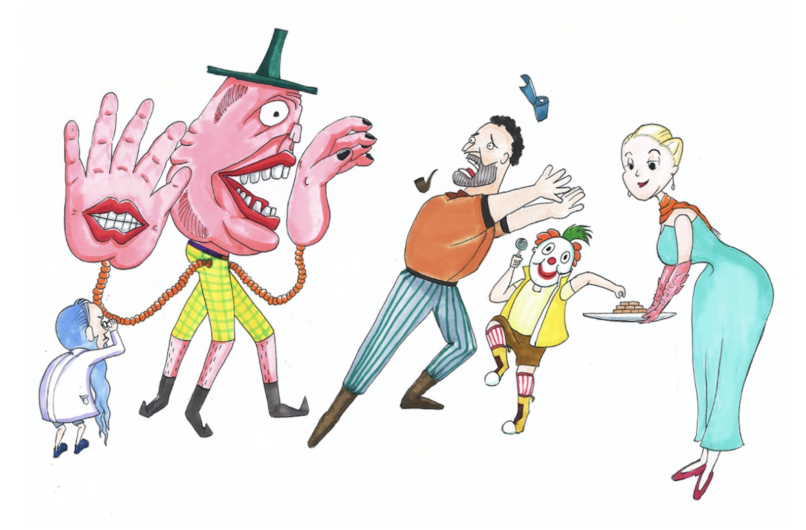

Mutualism
The theme of this project is about schizobulia, with the inspiration from the movie of Split and American drama of Legion.
The five figures represent five personalities splitting from one person, with a spadger revealing the personality of naughtiness and innocence, an old scientist showing the personality of preciseness and pragmatism, a middle-aged male worker expressing the personality of recreance and timidity, a housewife reflecting the personality of blandness and goodness, and a nefarious monster representing the personality of greed and distortion. (2017)